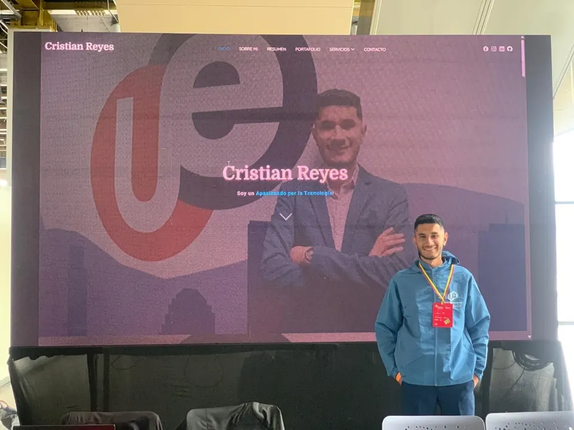
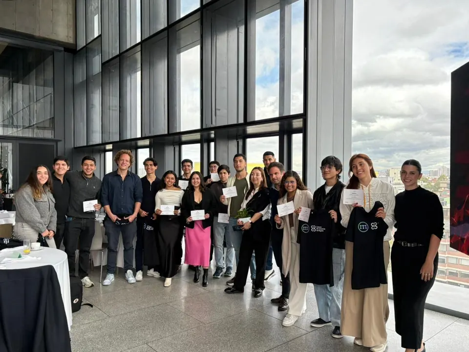
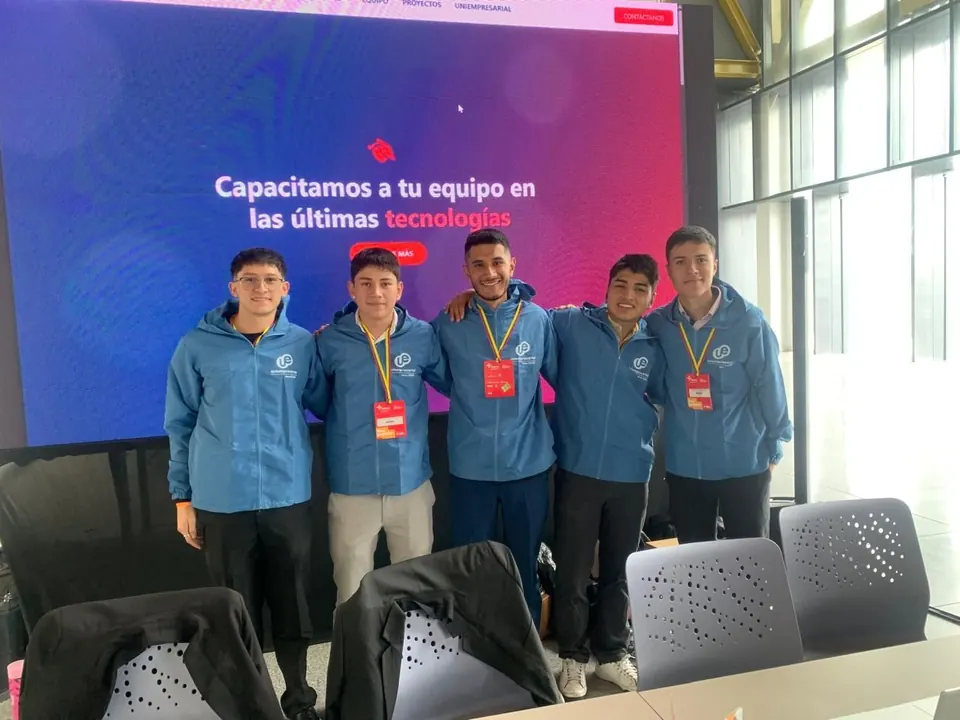

Ingeniero de Software egresado, con experiencia real en proyectos locales e internacionales.
Egresado · disponible de inmediato
Desarrollador Full Stack y Mobile
Desarrollador Full Stack con experiencia en proyectos internacionales (Argentina) y locales, especializado en aplicaciones móviles, integración con ERP, arquitectura frontend escalable y automatización de procesos. Con experiencia en proyectos para instituciones como la Cámara de Comercio de Bogotá y empresas de alcance internacional.
Egresado de Ingeniería de Software (en espera de grado, Uniempresarial). Trabajo con React, Angular, Node.js y n8n, y combino liderazgo técnico con metodologías ágiles para entregar resultados medibles. Busco un equipo donde pueda aportar soluciones que mejoren la eficiencia operativa y comercial.
Lo que respalda el trabajo detrás de cada proyecto.
3+
Años de experiencia
15+
Proyectos completados
5+
Clientes y entidades
20+
Tecnologías
Experiencia
Dónde he trabajado
Soluciones eficientes y seguras, desde plataformas internas hasta apps móviles en producción.
Experiencia profesional
Contratista de desarrollo full stack
Invest in Bogotá · Julio 2026 – presente · antes, pasante de desarrollo (enero – junio 2026)
Desarrollo full stack: desarrollo y mantenimiento de plataformas y herramientas digitales internas de la entidad: frontend, backend e integraciones con el stack JavaScript/Node.js.
Crecimiento interno: de pasante a contratista tras seis meses de aporte técnico, con mayor autonomía sobre el ciclo completo de desarrollo.
Trabajo interdisciplinario: colaboración con equipos de la entidad en iniciativas de transformación digital para la promoción de inversión y comercio exterior de Bogotá.
Desarrollador de aplicaciones móviles (React Native)
Global Snopek (Argentina) · Octubre 2025 – presente · remoto
Arquitectura offline-first: app móvil con operación 100 % offline, con bases de datos locales (SQLite/Realm) para garantizar la continuidad sin internet.
Sincronización con ERP: lógica de sincronización bidireccional que asegura la integridad de inventarios y ventas al reconectar con el servidor central.
Integración de hardware: módulos de impresión matricial y térmica por Bluetooth/USB para emitir facturas y recibos desde la app.
Mantenimiento y soporte: mejoras de rendimiento y soporte a aplicaciones legacy del ecosistema, con menores tiempos de respuesta para el equipo de ventas en campo.
Planeación, estimaciones y seguimiento ágil con SCRUM; coordinación de equipos de desarrollo.
Hablemos
Referencias
Lo que dicen quienes han trabajado conmigo
Cesar Guerrero
Director de Fusoft
Cristian ha demostrado un excelente dominio en el desarrollo de software y una gran capacidad para resolver problemas complejos. Su trabajo en Fusoft ha sido fundamental para mejorar nuestros sistemas y procesos.
Santiago García
Ingeniero de software
Su capacidad para liderar proyectos y su conocimiento técnico son excepcionales. Cristian siempre busca las mejores soluciones y se mantiene actualizado con las últimas tecnologías.
Douglas Mayorga
CEO y fundador de Minority Chamber
Su trabajo en la Minority Chamber ha sido fundamental para nuestra transformación digital. Cristian ha implementado soluciones innovadoras que han mejorado significativamente nuestra eficiencia operativa.
Nicolas Duran
Ingeniero multicloud
Su experiencia en arquitectura multicloud y su capacidad para diseñar soluciones escalables son impresionantes. Cristian ha sido un gran colaborador en proyectos de integración cloud.
Luis Sanchez
Ingeniero de software
Su enfoque en la calidad del código y las mejores prácticas de desarrollo ha sido fundamental para el éxito de nuestros proyectos. Cristian es un profesional excepcional y un gran mentor.
Blog
Experiencias y aprendizajes
Eventos, liderazgo técnico e infraestructura: lo que he vivido y lo que aprendí en el camino.

Marzo 2025
Eventos y networking
Una experiencia representando a FUSoft en la feria empresarial más importante de Bogotá, con una conferencia sobre IA aplicada a los negocios.
Liderazgo, IA, networking

2024
Desarrollo profesional
Cómo el programa Makers se volvió un pilar de mi desarrollo profesional y me conectó con una red de empresarios de alto impacto.
Emprendimiento, networking, crecimiento

2025
Liderazgo técnico
Reflexiones sobre gestionar equipos multidisciplinarios y proyectos de alto impacto para instituciones como la Cámara de Comercio de Bogotá.
Project management, liderazgo, SCRUM
2025
Cloud y DevOps
Cómo se implementó infraestructura cloud en Uniempresarial para plataformas que atienden a más de 10.000 estudiantes.
AWS, Docker, Kubernetes, educación
Contacto
Hablemos
Si buscas a alguien que construya plataformas internas, apps móviles o integraciones, escríbeme. Respondo rápido.